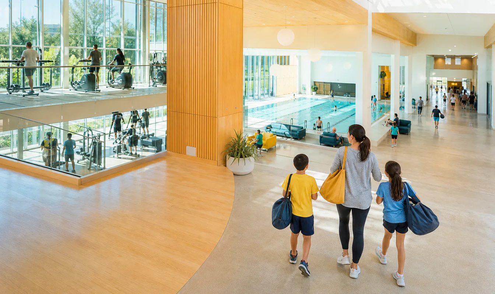
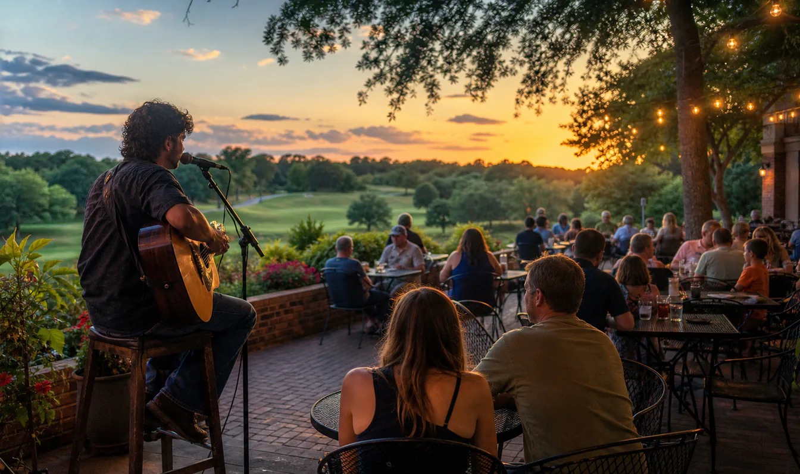
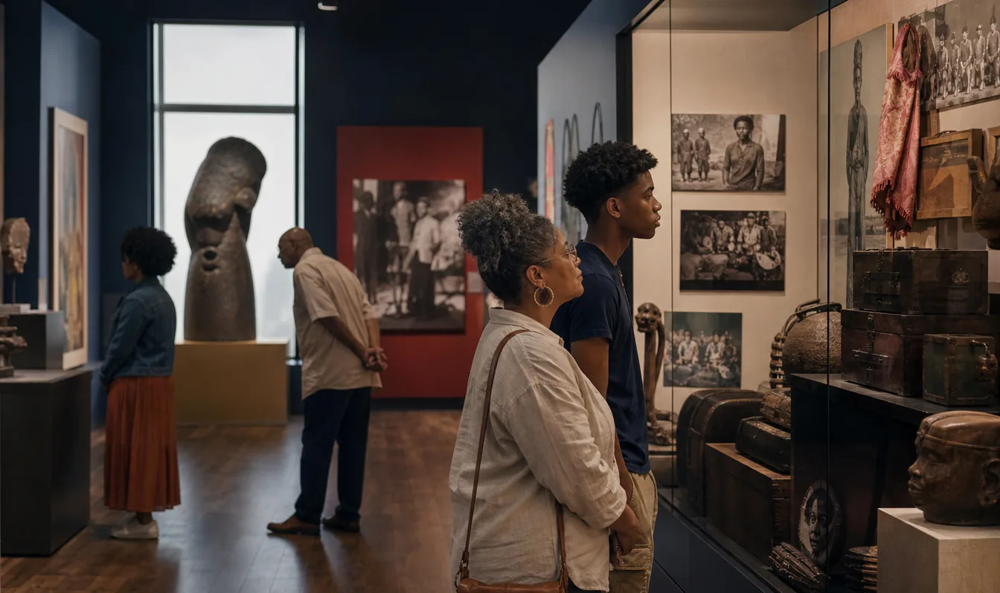
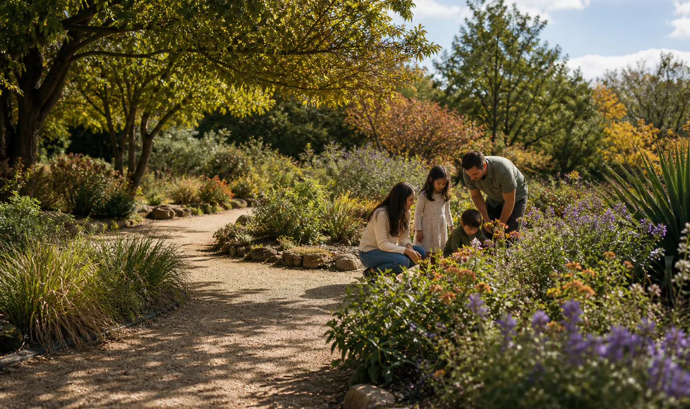

앨런 Leap Days — 매월 1일 참여 시설 입장 무료
Participating Allen recreation centers · Allen
매월 1일 앨런의 참여 레크리에이션 센터를 무료로 이용할 수 있습니다.
NearFree가 가장 최근에 확인한 항목 가운데 일부를 계속 새롭게 보여드립니다.
확인된 정보 12개
Participating Allen recreation centers · Allen
매월 1일 앨런의 참여 레크리에이션 센터를 무료로 이용할 수 있습니다.
Participating Allen businesses · Allen
컨퍼런스 배지를 제시하면 앨런의 여러 참여 식당·상점에서 할인, 1+1, 무료 품목 등 각기 다른 혜택을 받을 수 있습니다.

Home Plate Restaurant at Texas Rangers Golf Club · Arlington
Home Plate에서 금요일 저녁 지역 뮤지션의 라이브 공연을 커버 차지 없이 즐길 수 있습니다.


Carrollton Public Library locations · Carrollton
Carrollton과 Farmers Branch 거주자는 신분과 주소를 확인해 도서관 카드를 무료로 발급받을 수 있습니다.

African American Museum Dallas · Dallas
댈러스 페어 파크의 박물관을 일반 방문객은 무료로 관람할 수 있습니다.
Dallas Arboretum and Botanical Garden · Dallas
SNAP EBT 카드 또는 WIC 자격을 확인하면 최대 6명이 1인 $3에 주간 입장할 수 있습니다.
DCTA services in Denton · Denton
65세 이상, 장애인, Medicare 이용자와 6–18세 학생은 자격 배지를 발급받아 DCTA 할인 운임을 이용할 수 있습니다.

Fort Worth Botanic Garden · Fort Worth
SNAP·WIC·Medicaid 가구는 성인 2명과 같은 가구의 15세 미만 자녀가 일반 입장을 무료로 이용할 수 있습니다.
Modern Art Museum of Fort Worth · Fort Worth
금요일에는 상설전과 특별전 등을 무료 입장으로 관람할 수 있습니다.

Strikz Entertainment · Frisco
15세 이하 등록 어린이는 공개된 이용시간에 클래식 레인 볼링 2게임을 매일 무료로 이용할 수 있습니다.